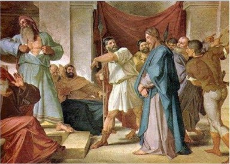

Claiming to be the Messiah was not technically blasphemous, but was traitorous to Rome. Messiahship including leading an armed revolt. The evangelist seems clearly to be attempting to shift blame for the crucifixion from the Romans to the Jews.

Jesus before the High Priest